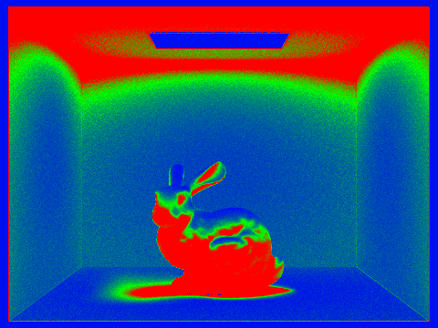

Assignment 3-1
Overview
In this project, we implement the core components of a path tracer. The foundation of path tracing is ray casting. We implemented ray generation that creates a number of sample rays for each pixel on the screen. In order to actually perform the ray casts, we created primitive intersection tests for spheres and triangles. These tests find if and where the ray intersects scene objects and is used in all lighting calculation. To speedup all the ray casts necessary for path tracing, we implemented Bounding Volume Hierarchy construction and intersection. This massively reduces the number of ray intersection tests needed. Direct illumination was implemented using both importance sampling and hemisphere sampling to get the light that is being poured into the scene directly by light sources. Beyond direct illumination, we want light to be able reflect off non-light objects giving it a more full and accurate look. This is accomplished through global illumination, which casts rays that bounce between multiple objects before reaching a light source. Finally, to further speedup rendering, we implemented adaptive sampling to detect when pixel color values have converged and terminate the lighting calculation early.
Part 1: Ray Generation and Intersection
Ray generation was relatively simple.
We simply linear interpolated between the camera space sensor bounds based on the x and y values.
This vector is then transformed to world space using c2w and normalized.
The camera position was used as the ray origin.
We sample a position within a given pixel, normalize the coordinates and use that to generate a ray from the screen position.
From the generated ray, we use est_radiance_global_illumination to calculate the radiance and add it to our Monte Carlo sum.
This is done num_samples times. At the end, the Monte Carlo sum is divided by num_samples and used to update the screens pixel buffer.
Primitive intersection allows us to test whether a ray has intersected with a primitive, such as a triangle or sphere. This is used to perform the ray cats that represent light moving through the scene.
To test for triangle intersection, we start by calculating the normal vector of the triangle surface.
This is then used to calculate the t value of an intersection on the same plane as the triangle using the formula given in lecture.
We make sure this value is within the bounds of the ray, if not then no intersection ocurred.
The t value is used to calculate the point of intersection.
Now that we have a point and a triangle, this problem simplifies to the triangle tests we learned for rasterization.
For each edge of the triangle, we test which side the intersection point is on.
If the intersection point is inner side of all three edges, then the point is within the triangle and the ray has an intersection.
To output the normal at the point of intersection we use barycentric interpolation to interpolate between the normals of the triangles vertices.
Sphere intersection is much simpler.
Using the formulas given in lecture, we compute the quadratic coefficients a, b, and c.
We use these coefficients in the quadratic formula to solve for both possible t values, first checking that the determinant is greater than 0.
The smallest t value that is within the ray bounds is the correct intersection.
To output the normal at the point of intersection, we simply get the vector from the origin of the sphere to the point of intersection and normalize it.
|
|

|
|
Part 2: Bounding Volume Hierarchy
We chose to use the average centroid as our split point heuristic.
This is easily calculated by averaging the centroid for every primitive.
Once we have this point, we can split on any of the three axes.
We use a second heuristic to determine which of these by calculating the total area from the left and right bounding boxes that result from each of the three possible splits.
The split axis with the lowest total area is chosen.
We use std::partition to partition the primitives into each side.
We use a test similar to the line equation test to test which side of the split plane each primitive is one.
This test simply dots the vector from the split point to an element centroid with the normal vector representing the plane.
The sign of the dot product tells us which side of the split plane the element is on.
In the rare case that all elements are on one side of the split point, we arbitrarily split the list of elements in half.
We then recurse on both of the partitions to generate the left and right node.

|
|
|
The following table shows the render times for 3 scenes with and without BVH intersection. Using BVH intersection massively reduces the render time in all 3 instances. In each of these scenes, the large amount of geometry means that each ray cast would need to perform an intersection test with hundreds of thousands of primitives. BVH intersection reduces the total number of intersection tests needing by first performing intersection against larger regions of space. If the ray doesn't intersect with a region, then the ray must also not intersect with any primitives within that region. So with one region intersection tests we can conclude that potentially thousands of primitives don't intersect with the ray.
| Scene | Blob | Wall-e | CBlucy |
|---|---|---|---|
| No BVH | 8242.206s | 5853.169s | 4864.474s |
| BVH | 0.3061s | 0.2203s | 0.1731s |
Part 3: Direct Illumination
Hemisphere Sampling
First, we uniformly sample a hemisphere to get the w_in direction.
It is this direction which we are going to cast a ray.
So we transform this direction from the object space to world space and assign to our new ray and call bvh->intersect to perform the ray cast.
If the ray hits anything, we will add to our Monte Carlo sum the integrand given in lecture.
We get the illumination L_in by calling zero_bounce_radiance.
The f value is simply calculated from the BSDF of the intersect object.
We calculate the cosine term from the dot product of the normal at the point of intersection and w_in (transformed to world space).
Since we are uniformly sampling a hemisphere, the sample space is 2 * PI and therefore the pdf is 1.0 / (2 * PI).
Finally, the proper integrand is calculated and added to the Monte Carlo sum.
After sampling num_samples times, the Monte Carlo sum is divided by num_samples and returned.
Light Sampling
With light sampling, we only sample rays that hit a light source, increasing the amount of illuminance each ray contributes.
Instead of sampling a fixed number of times, we sample over each light source a fixed number of times.
Using sample_L we can get the illumance value L_out as well sample a position on the light.
This gives us the w_in direction from the last rays hit point to the new hit point on the light.
We also get the pdf and a distance value between the two hit points.
Using this information, we set up a new ray cast so that we can test whether there is a direct path for light between the two hit points.
The new ray start for the original hit point and goes in the direction w_in.
We set a max distance for this ray to the distance value returned by sample_L minus EPS_F.
This ensures the ray cast won't intersect with the light source itself.
We then perform the ray cast and check if it found and intersection.
If there was an intersection, then another object is blocking the light and the illuminance contribution from this ray is 0.
If there wasn't an intersection, then this ray is contributing illuminance.
We calculate the f value and the cosine term the same as before and calculate the integral for the Monte Carlo sum.
After all the samples have been taken for a particular light, those samples are averaged and added to our overall sum.
|
|
|
|
|
|

|
|
We see from these images that importance sampling result in much less noise than hemisphere sampling.
Flat surfaces look much cleaner and shadows appear much smoother and subtler.
Darker areas, such as the bunnies feet are better lit and more defined with importance sampling.
However, hemisphere sampling fails to handle point lights.
With hemisphere sampling, the likelyhood that the randomly sampled ray will hit a point lights is incredibly small.
So point lights will not appear to affect renders with hemisphere sampling.
This why the dragon.dae scene appears completely black hemisphere sampling, this scene only contains a point light.
|
|
|
|
|
|
Through the images above, we see that the overall noise decreases as we add more light rays. With a low number of rays, shadows have lots of very dark noise around their perimiter. As the number of rays increase, the darkness of the noise decreases as well as the area affected by the noise. Notice that even with 64 light rays, the edges of geometry are still jagged. This is because the number of samples per pixel stays constant at 1. With more samples per pixel, the pixels on the edge of objects would have rays that sample the object itself and rays that just miss the object and shoot past it. These multiple rays would average out resulting in a smooth edge.
Task 4: Global Illumination
First we implemented the DiffuseBSDF::sample_f which randomly samples an incoming ray direction, wi, using the sampler in DiffuseBSDF and then we return f(wi -> wo) for the sampled wi. Then we implemented at_least_one_bounce_radiance by first calling the one_bounce_radiance on the current ray to calculate the direct illumination at the current depth of the ray. Then we would check our base case that if the depth of the ray is 1 we would just return the direct illumination, otherwise we would prepare to recurse. For our recursion we would first check using Russian Roulette if we would continue the recursion, and then we sample the BSDF of the original intersection to get a ray direction, and we test if this new ray intersects the BVH. If the ray intersects, we recurse on the new intersection (Subtracting the ray depth by 1) adding the at_least_one_bounce_radiance to the total radiance after scaling it by the previous sample's radiance, the pdf, and the probability continuation.
|
|
|
|
|
|
|
|
The first image is rendered using only the zero and one bounce of the ray, whereas the second image is rendered with every bounce except for the zeroth and first bounce. We can see how these two illuminations can add together produce the well-lit image we're after.
|
|
|
|
|
|
|
We see that when m=0, we only get direct lighting effects. When m=1, we start to see some indirect illumination; we see that the black shadows on the bunny have been lit up red and blue. When m=2, we see a bit more color bleed on the bunny. When m=3, the differences between this and the previous depth of 2 become less significant; one could see perhaps slightly darker shadows around the corners. When m=100, it is difficult to see any differences between this and m=3; one can see more color bleed on the back wall of the room. This tells us that we don't need to render up to 100 bounces to get a sufficiently illuminated view, which makes sence since each subsequent bounce contributes less and less light, as well as the probaility of continuation becomes smaller so most rays won't even make it past 5 bounces.
|
|
|
|
|
|
|
|
|
|
We can see that, the more samples we use per pixel, the less noisy our image becomes.
Task 5: Adaptive Sampling
We proceed as before in PathTracer::raytrace_pixel() still try to iterate over 'ns_aa' samples. However, the new change is now we keep a running sum of the illuminance calculated from the radiance returned by est_radiance_global_illumination to s1 as well as a sum of the illuminance squared to s2. These values are used during our convergence check, which happens once every samplesPerBatch samples.
In this convergence test, we calculate the mean and variance of the samples, and then using them calculate I = 1.96 * sqrt(sigma^2 / n). We then stop sampling if I is less than or equal to maxToleranace * mu. Then, we set the sampleCountBuffer to the number of samples we actually taken, n, and scale monteSum by n, which is the total radiance thus far and return it.
|
|

|
Reflection
We met up together usually at a library to work on the project. We would discuss how to tackle each problem together and usually draw a diagram or read the slides to figure out the logic for the code. Then we would rotate who would type up the code for each part and debug any mistakes together. We like working together on the same part rather than splitting the work of the project because this way we both understand how each part of the code operates and we can have two people helping debug the code if we run into mistakes. This made the collaboration work really well since we both were looking at the code together. We learned about ray tracing and how we can really speed up the rendering of images with acceleration tricks like BVH's, Russian Roulette, and Adaptive Sampling.
https://cal-cs184-student.github.io/sp22-project-webpages-AdamRashid96/proj3-1/index.html